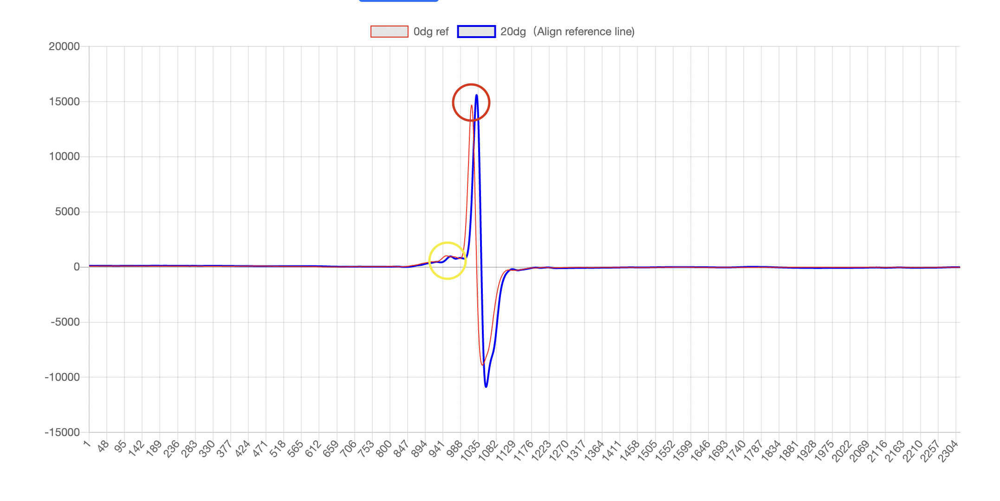

Click “Choose Files” button.
You need to upload your ESR sample files. (30 files in total) You will see “30 files” after you uploaded.
The chart on the top is a reference chart.
Use the BLUE LINE in the reference chart to find the x-axis range that you want to zoom in. And put them in the boxes at “Set Data Range”. The default value is 900-1250.
Use the YELLOW CIRCLE in the picture to help you find the range to align the data. You need to roughly find the range of the point you want to align your data sets. Just make sure the maximum point in this range is the same point you want to align with.
Sometimes you need to manually adjust the 0dg data set. Use your pointer to hover the maximum value of both charts in the chart at the RED CIRCLE area. Then input how many x-axis you want to move at the “other options” boxes. Click “Create Chart” button
Please do same thing with Y chart and Z chart
Input the value that you need to adjust for each data set. Once been done, if you want to download the data, Click the download button.